Overview
SNAP CLASS is a web app built with Streamlit. It finds students in classroom photos, or by their voice, and saves attendance to a Supabase database.
Runs the class
- Creates subjects
- Shares a join link and QR code
- Takes attendance by face or by voice
- Reviews and saves the result
Joins and checks in
- Logs in with their face
- Enrolls in a subject with its code
- Sees classes attended
How one class works
- Create the subject
- Share the join link
- Take photos or record audio
- Review the result
- Confirm and save
Getting started
Open the app and choose I am Student or I am Teacher on the home screen.
Teacher: register and log in
Register
Choose I am Teacher, then Register Instead. Enter a username, your name, a password, and the password again. Click Register now.
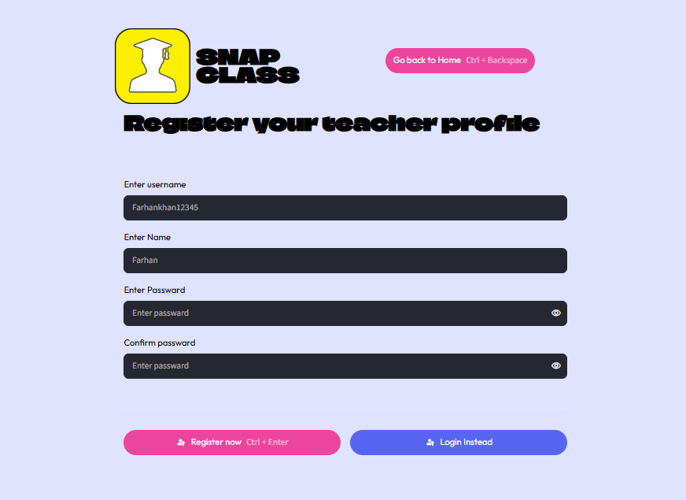
Log in
Enter your username and password, then click Login. You can also press Ctrl + Enter.
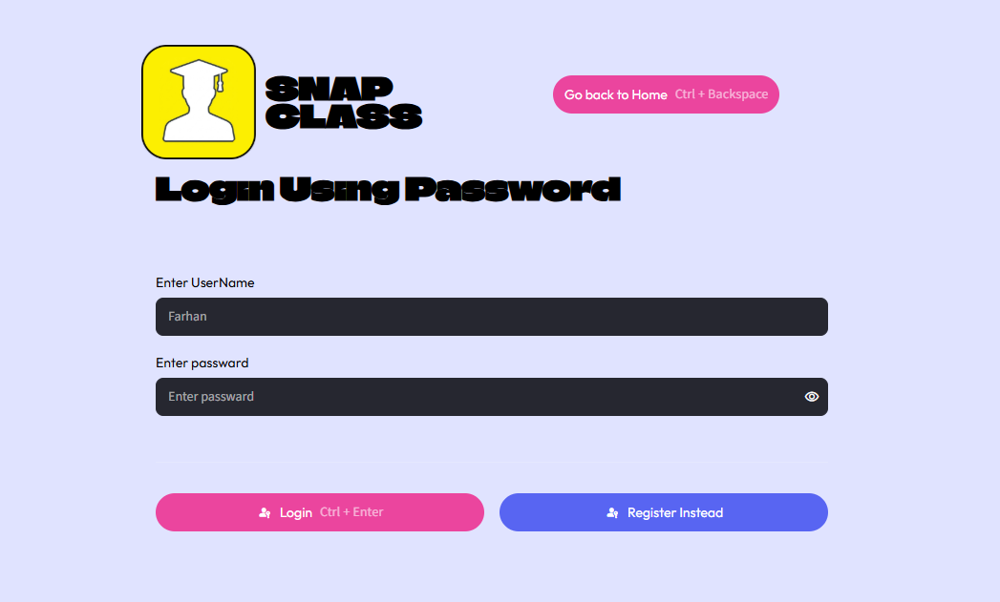
Student: log in with FaceID
Take a photo
Choose I am Student. Allow the camera, centre your face, and click Take Photo. The app compares your face with the enrolled faces and opens your dashboard.
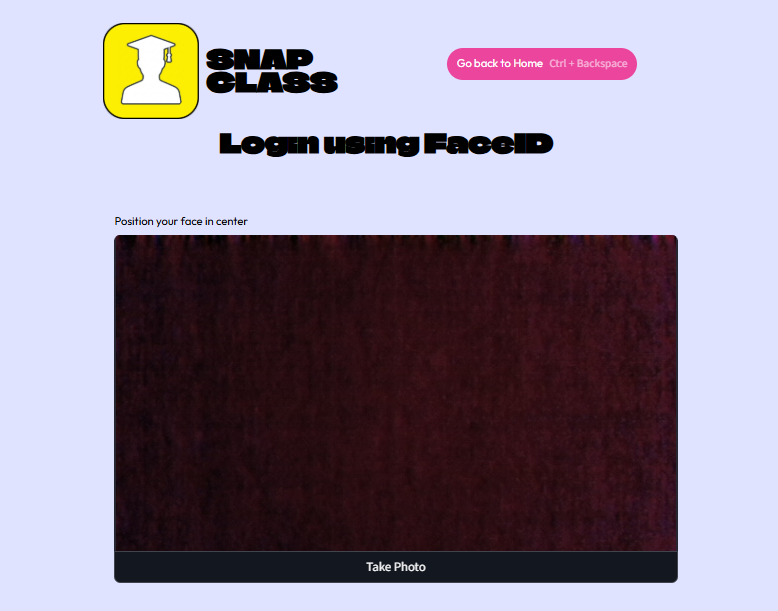
Teacher guide
After login, the dashboard has three buttons: Take Attendence, Manage Subjects and Attendence Records.
Manage subjects
Each subject card shows its code, section, number of students and number of classes held. Click Create new Subject to add one.
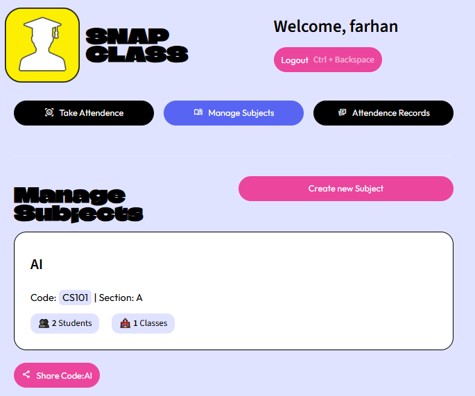
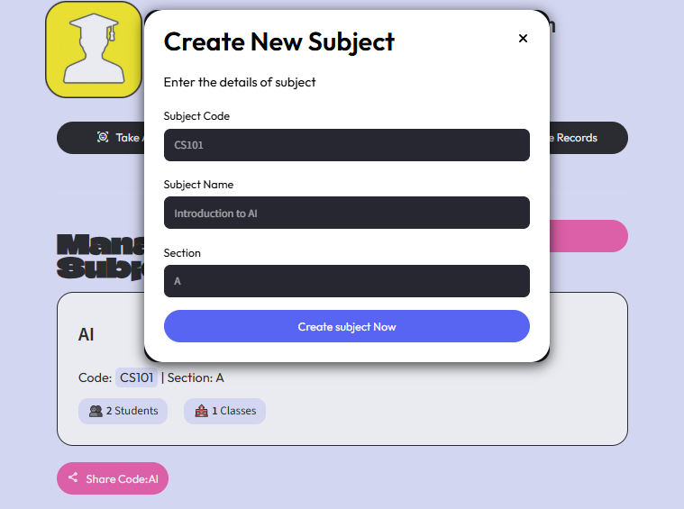
Share the class
Click Share Code on a subject card. The dialog shows a join link, the subject code and a QR code. Students open the link or scan the code to join.
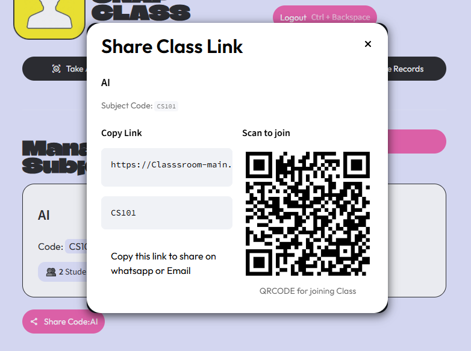
Take attendance
- Open Take Attendence and choose the subject.
- Click Add Photos and take one or more classroom photos. Clear All Photos starts again.
- Click Run face analysis, or click Use Voice attendence.
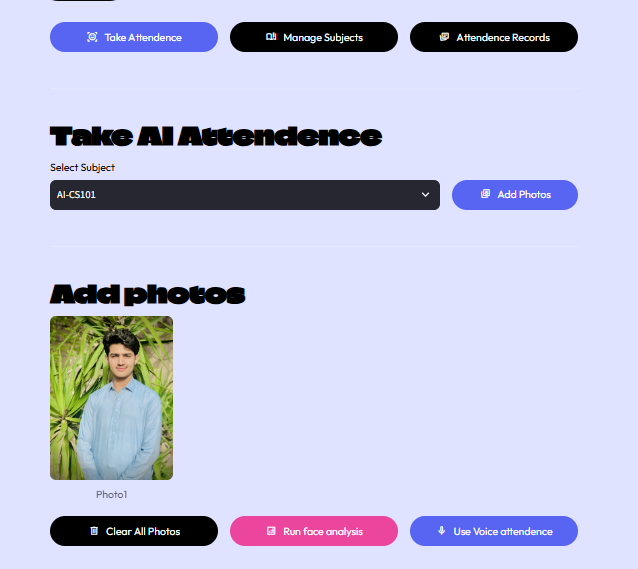
Or use voice
Record the class saying "I am present", then click Analyze Audio. The app matches each voice to an enrolled student.
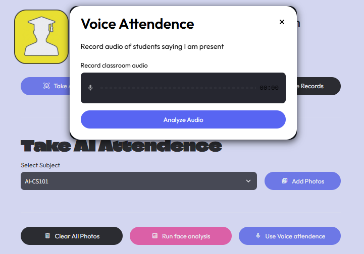
Review and save
The table lists every enrolled student, the photo where they were found (Source) and their Status, Present or Absent. Check it, then click Confirm and save. Discard throws the result away.
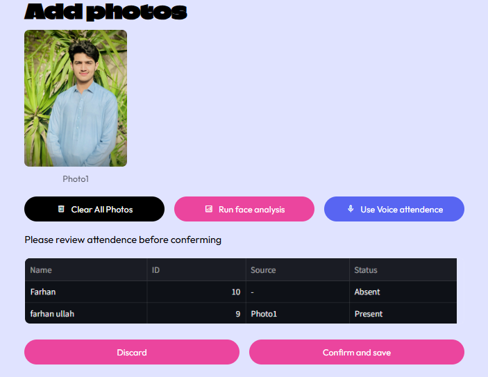
View records
Open Attendence Records to see one row per class: date, subject, subject code and how many students were present, for example 1/2 students.
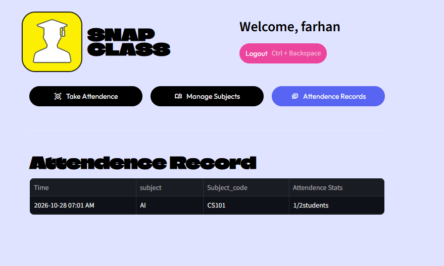
Student guide
After FaceID login, a student sees every enrolled subject, with the total classes and how many they attended.
Your dashboard
- Enroll in subject: click the button and type the subject code from your teacher. A join link fills in the code for you.
- Unenroll from this course: click the button under a subject card to leave it.
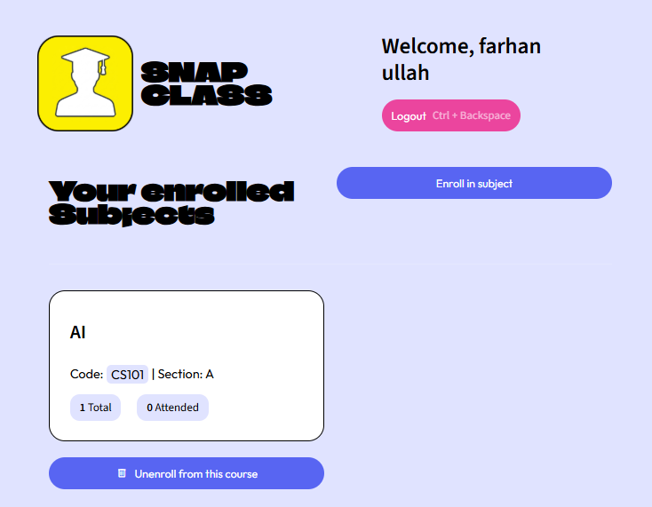
Under the hood
The app is written in Python. Face and voice recognition run on the server, and results are saved to Supabase.
Tools
| Part | Used for |
|---|---|
| Streamlit | Web pages, camera and audio input |
| Supabase | Database for teachers, students, subjects and attendance |
| dlib, face_recognition_models | Finding faces and making face embeddings |
| scikit-learn (SVC) | Matching a face to an enrolled student |
| Resemblyzer, librosa | Voice embeddings from recorded audio |
| bcrypt | Hashing teacher passwords |
Database tables
| Table | Main columns |
|---|---|
| teacher | username, name, password (hashed) |
| student | name, face embedding, voice embedding |
| subject | subject code, name, section, teacher |
| subject_student | student, subject |
| attendence | student, subject, timestamp, is_present |